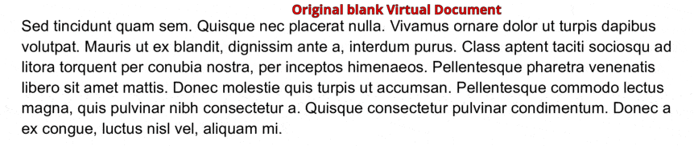

Explanations¶
Explanation is discussion that clarifies and illuminates a particular topic. Explanation is understanding-oriented.
Data Layer Concepts¶
The relations between all major Data Layer concepts of the SDK are the following: a Project consists of multiple Documents. Each one of the Documents consists of the Pages and belongs to a certain Category. Text in a Document can be marked by Annotations, which can be multi-line, and where each continuous piece of text contained into an Annotation is a Span. Each Annotation is located within a certain Bbox and is defined by a Label that is a part of one of the Label Sets. An Annotation Set is a list of Annotations that share a Label Set.
For more detailed information on each concept, follow the link on the concept’s name which leads to the automatically generated documentation.
Project¶
Project is essentially a dataset that contains Documents
belonging to different Categories or not having any Category assigned. To initialize it, call Project(id_=YOUR_PROJECT_ID).
The Project can also be accessed via the Smartview, with URL typically looking like https://YOUR_HOST/admin/server/document/?project=YOUR_PROJECT_ID.
If you have made some local changes to the Project and want to return to the initial version available at the server, or
if you want to fetch the updates from the server, use the argument update=True.
Here are the some of properties and methods of the Project you might need when working with the SDK:
project.documents– training Documents within the Project;project.test_documents– test Documents within the Project;project.get_category_by_id(YOUR_CATEGORY_ID).documents()– Documents filtered by a Category of your choice;project.get_document_by_id(YOUR_DOCUMENT_ID)– access a particular Document from the Project if you know its ID.
Document¶
Document is one of the files that constitute a Project. It consists of Pages and can belong to a certain Category.
A Document can be accessed by project.get_document_by_id(YOUR_DOCUMENT_ID) when its ID is known to you; otherwise, it
is possible to iterate through the output of project.documents (or test_documents/_documents) to see which
Documents are available and what IDs they have.
The Documents can also be accessed via the Smartview, with URL typically looking like https://YOUR_HOST/projects/PROJECT_ID/docs/DOCUMENT_ID/bbox-annotations/.
Here are some of the properties and methods of the Document you might need when working with the SDK:
document.id_– get an ID of the Document;document.status– get the status of the Document in the pipeline. The status can be one of the following:Queuing for OCR: 0
Queuing for extraction: 1
Done: 2
Could not be processed: 111
OCR in progress: 10
Extraction in progress: 20
Queuing for categorization: 3
Categorization in progress: 30
Queuing for splitting: 4
Splitting in progress: 40
Waiting for splitting confirmation: 41
document.dataset_status– get the dataset status of the Document. The dataset status can be one of the following:None: 0
Preparation: 1
Training: 2
Test: 3
Excluded: 4
document.text– get a full text of the Document;document.pages()– a list of Pages in the Document;document.update()– download a newer version of the Document from the Server in case you have made some changes in the Smartview;document.category()– get a Category the Document belongs to;document.get_images()– download PNG images of the Pages in the Document; can be used if you wish to use the visual data for training your own models, for example;
Category¶
Category is a group of Documents united by common feature or type, i.e. invoice or receipt.
To see all Categories in the Project, you can use project.categories.
To find a Category the Document belongs to, you can use document.category.
To get documents or test_documents under the Category, use category.documents() or category.test_documents() respectively.
You can also observe all Categories available in the Project via the Smartview: they are listed on the Project’s page in the menu on the right.
Page¶
Page is a constituent part of the Document. Here are some of the properties and methods of the Page you might need when working with the SDK:
page.text– get text of the Page;page.spans()– get a list of Spans on the Page;page.number– get Page’s number, starting from 1.
Category Annotation¶
Category Annotation defines a Category of a Page or a Document. There can be more than one Category Annotation per Document and per Page; Category Annotations typically come with different confidence levels.
To get a Category Annotation of a particular Category for the Page, use Page.get_category_annotation(category).
To get a maximum-confidence Category Annotation for a Page, use Page.maximum_confidence_category_annotation.
To see a maximum-confidence Category Annotation for a Document, use Document.maximum_confidence_category_annotation.
Span¶
Span is a part of the Document’s text without the line breaks. Each Span has start_offset and end_offset denoting its starting and finishing characters in document.text.
To access Span’s text, you can call span.offset_string. We are going to use it later when collecting the Spans from the Documents.
Annotation¶
Annotation is a combination of Spans that has a certain Label (i.e. Issue_Date, Auszahlungsbetrag) assigned to it. They typically denote a certain type of entity that is found in the text. Annotations can be predicted by AI or be human-added.
Annotations always have to belong to an Annotation Set with a Label Set compatible with the Annotation’s Label.
Like Spans, Annotations also have start_offset and end_offset denoting the starting and the ending characters. To
access the text under the Annotation, call annotation.offset_string.
To see the Annotation in the Smartview, you can call annotation.get_link() and open the returned URL.
Annotation Set¶
Annotation Set is a group of Annotations united by Labels belonging to the same Label Set.
To retrieve all that Annotation Sets of a Document call document.annotation_sets(). To see Annotations in the set,
call annotation_set.annotations().
Every Document has one unique default Annotation Set, which can be retrieved with document.default_annotation_set. This
Annotation Set’s Label Set is the Document’s Category default Label Set and has the same name and ID as the Category. It
can be used to store all Annotations that don’t need to be organized into a separate Annotation Set.
To check what Annotation Labels can be added to an Annotation Set, you can check with annotation_set.label_set.labels.
Documents also have a unique Annotation Set for NO LABEL Annotations, which can be retrieved with document.no_label_annotation_set.
Label¶
Label defines what the Annotation is about (i.e. Issue_Date,
Auszahlungsbetrag). Labels are grouped into Label Sets. To see Annotations with a current Label,
call label.annotations() .
Label Set¶
Label Set is a group of related Labels. A Label Set can belong to different Categories and be used to create one or more Annotation Sets, depending on the Label Set.
Every Category has a default Label Set, which can be retrieved with category.default_label_set. This Label Set is used
to create the default Annotation Set for each Document in the Category.
Label Sets have an attribute, label_set.has_multiple_annotation_sets, which determines whether more than one Annotation Set
can be created per Document. If has_multiple_annotation_sets is False, then only a single Annotation Set with the
Label Set can be created per Document.
Bbox¶
Bbox is used to represent an area of a Page, defined by the coordinates of the bottom left corner and the top right corner of the bounding box. Check out our coordinate system explainer for more details.
You can access all character Bboxes of the Document by using document.bboxes. A Bbox can also be associated with a single Span, or with all Spans within an Annotation. To obtain the Bbox associate with a single Span, call span.bbox(). To obtain the Bbox wrapping all Spans in an Annotation, call annotation.bbox(). This should not be
confused with Annotation.selection_bbox, which is an attribute storing the Bbox a user has selected in the Smartview when creating the Annotation.
The following image shows a bounding box with red border, which is retrieved with Annotation.selection_bbox , and a bounding box highlighted in green, which is retrieved with Annotation.bbox():

Data Validation Rules¶
Konfuzio automatically applies a set of rules for validating data within a Project. Data Validation Rules ensure that Training and Test data is consistent and well formed for training an Extraction AI with Konfuzio.
In general, if a Document fails any of the checks described in the next sections, it will not be possible to train an AI with that Document.
More specifically:
If a Document fails any of the checks described in the Bbox Validation Rules section, it will not be possible to initialize the Project as a Python object (such as with
project = Project(YOUR_PROJECT_ID)), and aValueErrorwill be raised. All other Documents in the Project will be able to be initialized.If a Document fails any of the checks described in the sections Annotation Validation Rules and Span Validation Rules, it will not be possible to retrieve the Annotations (including their Spans) that fail the specific checks (such as with
annotation = document.get_annotation_by_id(YOUR_ANNOTATION_ID)), and aValueErrorwill be raised. All other Annotations in the Document will be retrievable.
Initializing a Project with the Data Validation Rules enabled¶
By default, any Project has the Data Validation Rules enabled, so nothing special needs to be done to enable it.
from konfuzio_sdk.data import Project
project = Project(id_=YOUR_PROJECT_ID) # all the data in this Project will be validated
Document Validation Rules¶
A Document passes the Data Validation Rules only if all the contained Annotations, Spans and Bboxes pass the Data Validation Rules. If at least one Annotation, Span, or Bbox within a Document fails one of the following checks, the entire Document is marked as unsuitable for training an Extraction AI.
Annotation Validation Rules¶
An Annotation passes the Data Validation Rules only if:
The Annotation is not from a Category different from the Document’s Category
The Annotation is not entirely overlapping with another Annotation with the same Label
It implies that partial overlaps with same Labels are allowed
It implies that full overlaps with different Labels are allowed
The Annotation has at least one Span
Please note that the Annotation Validation Rules are indifferent about the values of Annotation.is_correct or Annotation.revised.
For more information about what these boolean values mean, see Konfuzio Server - Annotations.
Span Validation Rules¶
A Span passes the Data Validation Rules only if:
The Span contains non-empty text (the start offset must be strictly greater than the end offset)
The Span is contained within a single line of text (must not be distributed across multiple lines)
Bbox Validation Rules¶
A Bbox passes the Data Validation Rules only if:
The Bbox has non-negative width and height (zero is allowed for compatibility reasons with many OCR engines)
The Bbox is entirely contained within the bounds of a Page
The character that is mapped by the Bbox must correspond to the text in the Document
Initializing a Project with the Data Validation Rules disabled¶
By default, any Project has the Data Validation Rules enabled.
A possible reason for choosing to disable the Data Validation Rules that come with the Konfuzio SDK, is that an expert user
wants to define a custom data structure or training pipeline which violates some assumptions normally present in Konfuzio
Extraction AIs and pipelines.
If you don’t want to validate your data, you should initialize the Project with strict_data_validation=False.
We highly recommend to keep the Data Validation Rules enabled at all times, as it ensures that Training and Test data is consistent for training an Extraction AI. Disabling the Data Validation Rules and training an Extraction AI with potentially duplicated, malformed, or inconsistent data can decrease the quality of an Extraction AI. Only disable them if you know what you are doing.
project = Project(id_=YOUR_PROJECT_ID, strict_data_validation=False)
Architecture SDK to Server¶
The following chart is automatically created by the version of the diagram on the branch master, see source.
If you hover over the image you can zoom or use the full page mode.
If you want to edit the diagramm, please refer to the GitHub Drawio Documentation.
Directory Structure¶
├── konfuzio-sdk <- SDK project name
│ │
│ ├── docs <- Documentation to use konfuzio_sdk package in a project
│ │
│ ├── konfuzio_sdk <- Source code of Konfuzio SDK
│ │ ├── __init__.py <- Makes konfuzio_sdk a Python module
│ │ ├── api.py <- Functions to interact with the Konfuzio Server
│ │ ├── cli.py <- Command Line interface to the konfuzio_sdk package
│ │ ├── data.py <- Functions to handle data from the API
│ │ ├── evaluate.py <- Functions to evaluate the performance of the AIs
│ │ ├── extras.py <- Classes to initialize AI-related dependencies safely
| | ├── normalize.py <- Functions to normalize Spans according to data_type
│ │ ├── regex.py <- Helper Functions to handle regex related tasks
│ │ ├── samples.py <- Local sample test Project
│ │ ├── settings_importer.py <- Meta settings loaded from the project
│ │ ├── urls.py <- Endpoints of the Konfuzio host
│ │ ├── utils.py <- Utils functions for the konfuzio_sdk package
| | |
│ | ├── trainer <- Trainer module to train AI models
| | | ├── __init__.py <- Makes trainer a Python module
| | | ├── base.py <- Base class for all AIs
| | | ├── document_categorization.py <- AI for Document categorization
| | | ├── information_extraction.py <- AI for Information extraction
| | | ├── file_splitting.py <- AI for File splitting
| | | ├── image.py <- Image processing helper functions
| | | ├── tokenization.py <- Custom tokenization classes
| | |
│ | ├── tokenizer <- Tokenizer module to tokenize documents
| | | ├── __init__.py <- Makes tokenizer a Python module
| | | ├── base.py <- Base class for all Tokenizers
| | | ├── paragraph_and_sentence.py <- Paragraph and Sentence Tokenizer
| | | ├── regex.py <- Various Regex Tokenizers
| |
│ ├── tests <- Pytests: basic tests to test scripts based on a demo project
│ │
│ ├── .gitignore <- Specify files untracked and ignored by git
│ ├── README.md <- Readme to get to know konfuzio_sdk package
│ ├── pytest.ini <- Configurations for pytests
│ ├── settings.py <- Settings of SDK project
│ ├── setup.cfg <- Setup configurations
│ ├── setup.py <- Installation requirements
examples of how to use it for visualization, for example.
Coordinates System¶
The size of a page of a Document can be obtained in the Document object. The format is [width, height].
Original size of the Document is the size of the uploaded Document (which can be a PDF file or an image). The bounding boxes of the Annotations are based on this size.
E.g.: [1552, 1932]
Current size can be accessed via calling height and width from the Page object. They show the dimensions of the
image representation of a Document Page. These representations are used for computer vision tasks and the SmartView.
E.g.: [372.48, 463.68]
from konfuzio_sdk.data import Project
my_project = Project(id_=YOUR_PROJECT_ID)
# first Document uploaded
document = my_project.documents[0]
# index of the Page to test
page_index = 0
width = document.pages()[page_index].width
height = document.pages()[page_index].height
The coordinates system used has its start in the bottom left corner of the page.

To visualize the character bounding boxes of a document and overlapping them in the image opened with the python library PIL, for example, we can resize the image to the size in which they are based (original_size). The following code can be used for this:
from PIL import ImageDraw
from konfuzio_sdk.data import Project
my_project = Project(id_=YOUR_PROJECT_ID)
# first Document uploaded
document = my_project.get_document_by_id(YOUR_DOCUMENT_ID)
# index of the Page to test
page_index = 0
width = document.pages()[page_index].width
height = document.pages()[page_index].height
page = document.pages()[page_index]
image = page.get_image(update=True)
factor_x = width / image.width
factor_y = height / image.height
image = image.convert('RGB')
image = image.resize((int(image.size[0] * factor_x), int(image.size[1] * factor_y)))
height = image.size[1]
image_characters_bbox = [char_bbox for _, char_bbox in page.get_bbox().items()]
draw = ImageDraw.Draw(image)
for bbox in image_characters_bbox:
image_bbox = (
int(bbox["x0"]),
int((height - bbox["y1"])),
int(bbox["x1"]),
int((height - bbox["y0"])),
)
draw.rectangle(image_bbox, outline='green', width=1)
image
# Note: cv2 has the origin of the y coordinates in the upper left corner. Therefore, for visualization, the
# height of the image is subtracted to the y coordinates.

The coordinates obtained from the segmentation endpoint of the API are based on the image array shape. To visualize the segmentation bounding boxes of a page on an image opened with the python library PIL, for example, we can overlap them directly.
from PIL import ImageDraw
from konfuzio_sdk.data import Project
from konfuzio_sdk.api import get_results_from_segmentation
my_project = Project(id_=YOUR_PROJECT_ID)
# first Document uploaded
document = my_project.get_document_by_id(YOUR_DOCUMENT_ID)
# index of the Page to test
page_index = 0
page = document.pages()[page_index]
image = page.get_image(update=True)
image = image.convert('RGB')
draw = ImageDraw.Draw(image)
image_segmentation_bboxes = get_results_from_segmentation(document.id_, my_project.id_)
for bbox in image_segmentation_bboxes[page_index]:
image_bbox = (
int(bbox["x0"]),
int(bbox["y0"]),
int(bbox["x1"]),
int(bbox["y1"]),
)
draw.rectangle(image_bbox, outline='red', width=1)
image

To visualize both at the same time we can convert the coordinates from the segmentation result to be based on the image size used for the characters’ bbox.
from PIL import ImageDraw
from konfuzio_sdk.data import Project
from konfuzio_sdk.api import get_results_from_segmentation
my_project = Project(id_=YOUR_PROJECT_ID)
# first Document uploaded
document = my_project.get_document_by_id(YOUR_DOCUMENT_ID)
# index of the Page to test
page_index = 0
width = document.pages()[page_index].width
height = document.pages()[page_index].height
page = document.pages()[page_index]
image = page.get_image(update=True)
factor_x = width / image.width
factor_y = height / image.height
image = image.convert('RGB')
image = image.resize((int(image.size[0] * factor_x), int(image.size[1] * factor_y)))
height = image.size[1]
image_characters_bbox = [char_bbox for _, char_bbox in page.get_bbox().items()]
draw = ImageDraw.Draw(image)
for bbox in image_characters_bbox:
image_bbox = (
int(bbox["x0"]),
int((height - bbox["y1"])),
int(bbox["x1"]),
int((height - bbox["y0"])),
)
draw.rectangle(image_bbox, outline='green', width=1)
image_segmentation_bboxes = get_results_from_segmentation(document.id_, my_project.id_)
for bbox in image_segmentation_bboxes[page_index]:
image_bbox = (
int(bbox["x0"] * factor_x),
int(bbox["y0"] * factor_y),
int(bbox["x1"] * factor_x),
int(bbox["y1"] * factor_y),
)
draw.rectangle(image_bbox, outline='red', width=1)
image
# Note: cv2 has the origin of the y coordinates in the upper left corner. Therefore, for visualization, the
# height of the image is subtracted to the y coordinates.

Our extraction AI runs a merging logic at two steps in the extraction process. The first is a horizontal merging of Spans right after the Label classifier. This can be particularly useful when using the Whitespace tokenizer as it can find Spans containing spaces. The second merging logic is a vertical merging of Spans into a single multiline Annotation. Checkout the architecture diagram for more detail.
Horizontal Merge¶
When using an Extraction AI, we merge adjacent horizontal Spans right after the Label classifier. The confidence of the resulting new Span if taken to be the mean confidence of the original Spans being merged.
A horizontal merging is valid only if:
All Spans have the same predicted Label
Confidence of predicted Label is above the Label threshold
All Spans are on the same line
Spans are not overlapping
No extraneous characters in between Spans
A maximum of 5 spaces in between Spans
The Label type is not one of the following: ‘Number’, ‘Positive Number’, ‘Percentage’, ‘Date’ OR the resulting merging create a Span normalizable to the same type
Input |
Able to merge? |
Reason |
Result |
|---|---|---|---|
Text Annotation |
yes |
/ |
Text Annotation |
Text Annotation |
no |
Text Annotation |
|
Text . Annotation |
no |
Text . Annotation |
|
Annotation 7 |
no |
Annotation 7 |
|
34 98 |
no |
|
34 98 |
34 98 |
yes |
/ |
34 98 |
November 2022 |
yes |
/ |
November 2022 |
Novamber 2022 |
no |
|
Novamber 2022 |
34 98% |
yes |
/ |
34 98% |
34 98% |
no |
34 98% |
Label Type: Text
Label Type: Number
Label Type: Date
Label Type: Percentage
Label Type: NO LABEL/Below Label threshold
Vertical Merge¶
When using an Extraction AI, we join adjacent vertical Spans into a single Annotation after the LabelSet classifier.
A vertical merging is valid only if:
They are on the same Page
They are predicted to have the same Label
Multiline annotations with this Label exist in the training set
Consecutive vertical Spans either overlap in the x-axis, OR the preceding Span is at the end of the line, and following Span is at the beginning of the next
Confidence of predicted Label is above the Label threshold
Spans are on consecutive lines
Merged lower Span belongs to an Annotation in the same AnnotationSet, OR to an AnnotationSet with only a single Annotation
Input |
Able to merge? |
Reason |
|---|---|---|
Text |
yes |
/ |
Annotation |
no |
|
Text more text |
no |
|
Some random text Text |
yes |
/ |
Some random text Text . |
no |
|
Text more text |
yes |
/ |
Text |
no |
|
Annotation Nb. |
yes |
* |
Annotation 41 |
no |
|
* The bottom Annotation is alone in its AnnotationSet and therefore can be merged.
** The Annotations on each line have been grouped into their own AnnotationSets and are not merged.
Label 1
Label 2
NO LABEL/Below Label threshold
Horizontal and Vertical Merge with the Paragraph and Sentence Tokenizers¶
When using the Paragraph or Sentence Tokenizer together with our Extraction AI model, we do not use the rule based vertical and horizontal merge logic above, and instead use the sentence/paragraph segmentation provided by the Tokenizer.
The logic is as follows:
And here’s an illustrated example of the merge logic in action:
